The decision to land a probe on the asteroid 433 Eros, and place a spacecraft in orbit around it was not by random chance. No particular scientist looked at a tabulated list of the thousands of asteroids and picked it out randomly. There was a real good reason. And that reason, boys and girls, is because MAJestic (through NASA) wanted a close look at the extraterrestrial facility there.
What the public is told…
The Near Earth Asteroid Rendezvous (NEAR)
The Near Earth Asteroid Rendezvous (NEAR) was designed to study the near Earth asteroid 433 Eros from close orbit. It was designed to operate for over a period of a year. It was designed quickly (for a NASA program) and was successfully launched in February 1996. It traveled for four years until it was able to enter orbit around the asteroid in February 2000.
The Near Earth Asteroid Rendezvous (NEAR) spacecraft took 4 years from launch until it became the first spacecraft to orbit an asteroid in February 2000. A month later, the spacecraft was re-named "NEAR Shoemaker" to honor the late Eugene Shoemaker. To save launch costs, the mission used a special 2-year-period trajectory with an Earth gravity assist. On the way, the spacecraft imaged the asteroid 253 Mathilde. On 20 December 1998, NEAR’s large engine misfired, failing to brake it for entry into orbit about 433 Eros. Another attempt 2 weeks later succeeded, but the spacecraft was almost a million kilometers away and took over a year to reach the asteroid. The mission was recovered thanks to a generous fuel supply and robust contingency planning. The implementation of the spacecraft’s daring orbital maneuvers is described, including those used to land on Eros’ surface in February 2001. -NEAR Mission Design
In 1991, a “Discovery” Near Earth Asteroid Rendezvous (NEAR) mission was proposed, and competitive proposals for it were prepared by APL and by the Jet Propulsion Laboratory (JPL).
The APL proposal was selected and system definition studies were carried out in 1992–1993.
The studies first concentrated on direct flight paths to small near-Earth asteroids that lay on the Ecliptic plan. The initial plan was with a mission to (4660) Nereus that would launch in January 1998.
Jan 01, 2000 · The Apollo type asteroid (4660) Nereus (1982DB) is recognized as one of the most accessible asteroid, and it is a candidate for the target of MUSES-C project, i.e. the first asteroid sample return mission by the Institute of Space and Astronautical Science (ISAS). -Photometric observation of (4660)Nereus - ScienceDirect
Strangely, some vocal but un-named scientists were concerned that an intensive orbital survey of such a small asteroid might not be very productive. They INSISTED that the entire mission be re-scoped to a completely different asteroid.
So these un-named scientists had the program target changed.
They argued that the 433 Eros asteroid would be a much better target since it has dimensions of about 14 x 14 x 33 km, about 400 times the area and over 6000 times the volume of 4660 Nereus. It was much, much, larger.
- 4660 Nereus. The initial size estimate for Nereus came from an optical R-band study (Ishibashi et al., 2000a, 2000b) which concluded that it is an elongated object with diameter between 1.1–1.3 km
- 433 Eros. Much larger at 33 x 13 x 13 km.
Unfortunately, problem was that 433 Eros was way, way out of the way. It was not on nor lay closely upon the Ecliptic Plane as all the other asteroids that were being considered. It was “in the boondocks”, and way out of the way. Making a trip to visit is outrageously difficult.
Eros’ orbit is inclined 11° to the ecliptic (Earth’s orbit plane), requiring, for direct transfers, high declination of launch asymptotes and launch energies that are too high for a reasonably sized spacecraft with the Discovery-baselined Delta-class launch vehicle. This problem was solved by using a 2-year delta V-Earth Gravity Assist (delta VEGA) trajectory. The spacecraft would be launched into an orbit with an approximately 2-year period in the ecliptic plane 23 months before the latest minimum-launch energy departure date on 22 or 23 January 1998. Near aphelion of this orbit, a delta V maneuver would be performed to target an Earth swing-by at the optimum date. At the Earth return, the spacecraft’s velocity relative to the planet would be increased considerably, allowing a swing-by low over the Northern Hemisphere that would bend the trajectory into Eros’ orbit plane with its 11° inclination to the ecliptic. -NEAR Mission Design
In mid-1993, the delta VEGA trajectory to Eros was adopted as the baseline for the NEAR mission. At aphelion in early 1997, the space-craft would be behind the Sun as seen from the Earth, so the deep space delta V was moved to early March, several days after the NEAR spacecraft (re-christened NEAR Shoemaker in March 2000 to honor the late Eugene Shoe-maker) left the solar exclusion zone within 3° of the Sun, where communications with the spacecraft would be difficult or impossible.
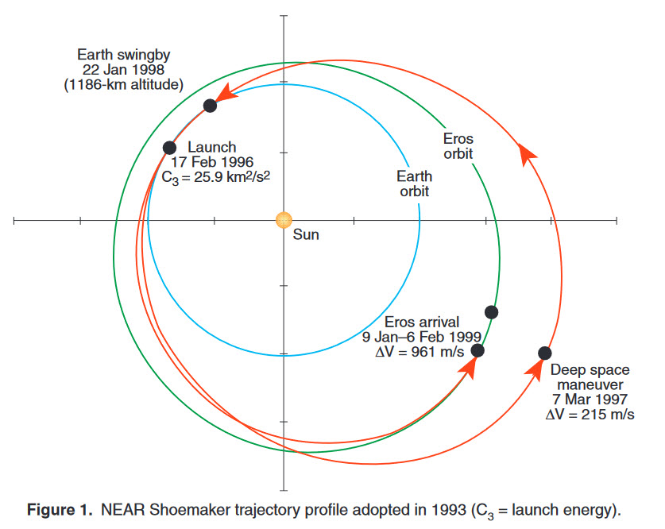
After a four year travel, the NEAR spacecraft approached the asteroid and started to make it’s approach. This approach involved a lot of fuel, but unusually good planning on the part of NASA made sure that the spacecraft would be able to get into a fine parking orbit around the asteroid.
The table below, lists several parameters for each of the propulsive maneuvers performed by the NEAR Shoemaker spacecraft. In the last column, under “Mode,” the table
The table below, lists several parameters for each of the propulsive maneuvers (changing trajectory planes) performed by the NEAR Shoemaker spacecraft. In the last column, under “Mode,” the table indicates the basic strategy for orienting the spacecraft according to the options available (and described elsewhere).
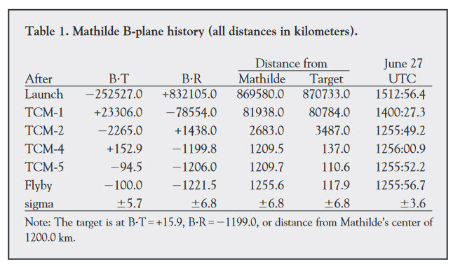
It’s all very interesting (to me at least), but let’s not get too bogged down on all the interesting details. In short, the spacecraft needed to maneuver to get into orbit. This took generous amounts of fuel and energy. And, as specified earlier, this is simply because the spacecraft was moving to a difficult to visit, and difficult to go into orbit about, asteroid.
Here’s a summary of the orbital and trajectory firings, if you don’t believe me…
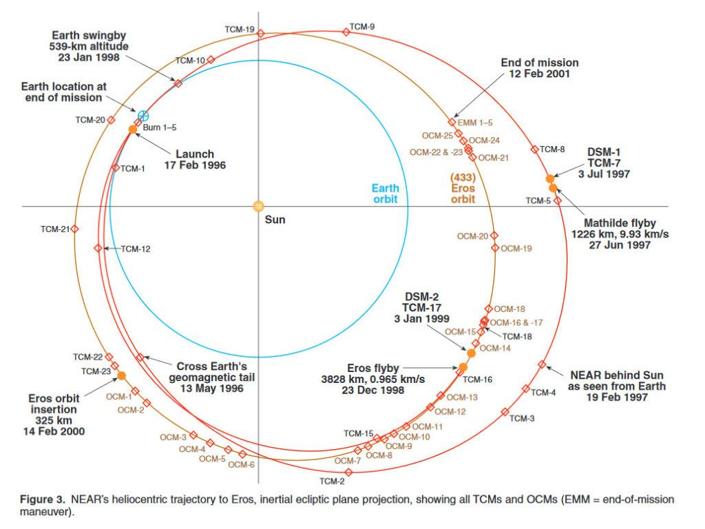
Objectives
The primary scientific objectives of NEAR were to return data on the bulk properties, composition, mineralogy, morphology, internal mass distribution and magnetic field of 433 Eros. Secondary objectives include studies of asteroid regolith properties (loosely consolidated surface material), interactions with the solar wind, possible current activity as indicated by dust or gas and the asteroid spin state.
NASA’s NEAR Shoemaker spacecraft, met all its scientific goals in orbiting the asteroid Eros and successfully accomplished a controlled descent to the surface of the asteroid on 12 February 2001. The chief goal of the controlled descent to the surface was to gather close-up pictures of the boulder-strewn surface of 433 Eros, more than 196 million miles from Earth.
DESIGN
The NEAR spacecraft design is mechanically simple and geared toward a short development and test time. Except for the initial deployment of the solar panels and protective instrument covers, the spacecraft has only one moveable mechanism. Its distributed architecture allows parallel development and test of each subsystem, yielding an unusually short spacecraft integration and test period.
Several innovative features of the NEAR design include the first use of an x-band solid-state power amplifier for an interplanetary mission, the first use of a hemispherical resonator gyroscope in space and extremely high-accuracy, high voltage power supply control.
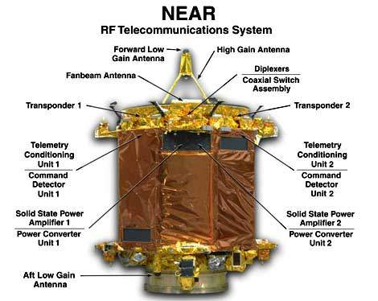
The spacecraft has the shape of an octagonal prism, approximately 1.7m on each side. It has four fixed gallium arsenide solar panels in a windmill arrangement, a fixed 1.5m X-band high-gain radio antenna with a magnetometer mounted on the antenna feed and an X-ray solar monitor on one end (the forward deck). The other instruments are fixed on the opposite end (the aft deck). Most electronics are mounted on the inside of the decks. The propulsion module is contained in the interior.
PROPULSION
The craft is three-axis stabilized and uses a single bipropellant (hydrazine/nitrogen tetroxide) 450 Newton (N) main thruster and four 21N and seven 3.5N hydrazine thrusters for propulsion, for a total delta-V potential of 1,450m/s. Attitude control is achieved using the hydrazine thrusters and four reaction wheels. The propulsion system carried 209kg of hydrazine and 109kg of NTO oxidizer in two oxidizer and three fuel tanks.
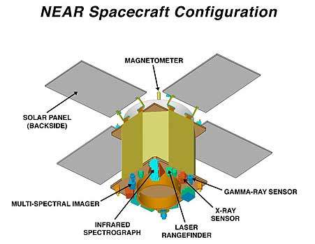
Power was provided by four 1.8m x 1.2m gallium arsenide solar panels that can produce 400W at 2.2AU (NEAR’s maximum distance from the Sun) and 1,800W at 1AU. Power was stored in a 9A/hr, 22-cell rechargeable super nickel-cadmium battery.
INSTRUMENTATION
The spacecraft also featured Multi-Spectral Imager (MSI) for imaging Eros in multiple spectral bands to determine its shape and surface features and to map mineral distributions. It had a NEAR Infrared Spectrometer (NIS) for measuring the near-infrared spectrum to determine the distribution and abundance of surface minerals and a NEAR Laser Rangefinder (NLR). This is a laser altimeter that measures the range to the surface to build up high-resolution topographic profiles (giving a global shape model of Eros).
It also has an X-ray/Gamma-Ray Spectrometer (XGRS) detecting X-ray fluorescence from elements on the asteroid surface. Some of the emissions are excited by cosmic rays and some are from natural radioactivity in the asteroid. There is also a Magnetometer (MAG) that searches for and maps any intrinsic magnetic field around Eros and a Radio Science, which is a coherent X-band transponder measuring radial velocities of the spacecraft relative to Earth, helping to map the gravitational field of Eros.
The Landing of a probe onto the asteroid
NEAR-Shoemaker became the first spacecraft to land on an asteroid and send signals back from its surface.
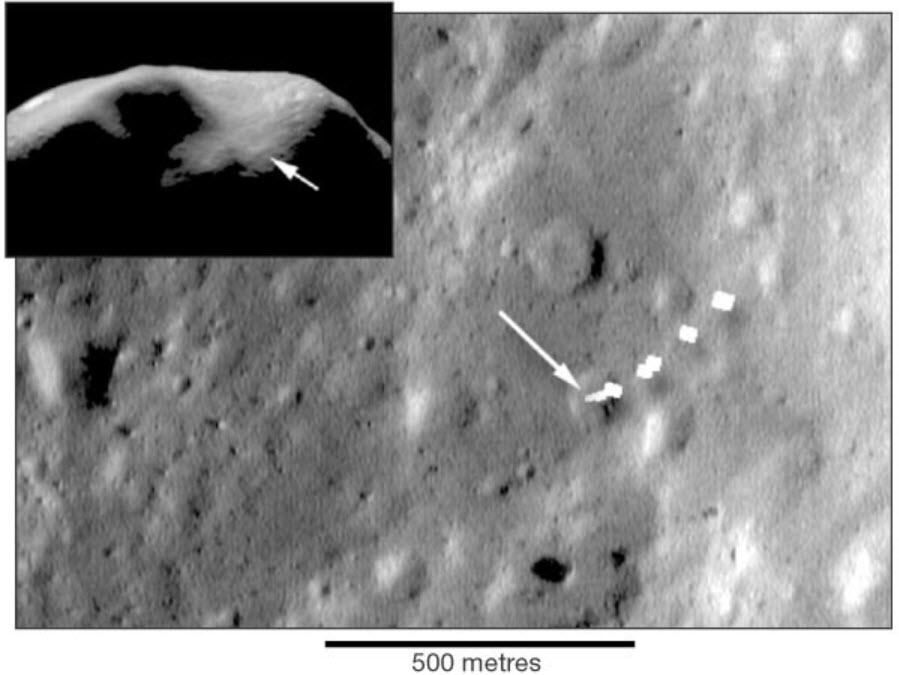
Since the robot spacecraft was not designed for such activity, the success of the landing on asteroid 433 Eros was not assured. In short, after the orbital mapping was completed, the NASA team crashed the spacecraft into the asteroid. They tried to do it gingerly, but they pretty much smashed it onto the surface.
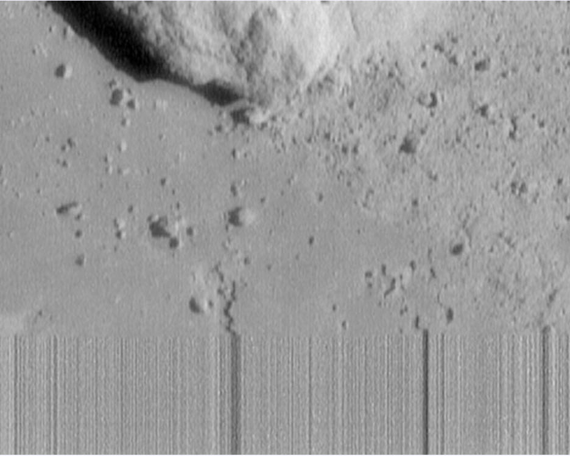
Shown above is the last picture taken by NEAR-Shoemaker before its touchdown.
The streaking on the lower part of the image was caused by the loss of telemetry as the satellite impacted the surface.
The image was taken 130 meters above the surface and spans 6 meters across. Rocks as small as a human hand are visible.
The Official Narrative…
Feb. 12, 2001 — After an apparently gentle descent, the first spacecraft ever to land on an asteroid touched down today shortly after 3 p.m. ET.
The 1,100-pound craft settled on a saddle-shaped depression of the asteroid, Eros, and then continued transmitting signals to Earth, suggesting it was not damaged as it struck the asteroid’s rock-strewn surface.
Asteriod Landing Animation “I am happy to report that the NEAR has touched down,” said Robert Farquhar, the NEAR mission director, just after the craft transmitted its zero altitude location. “We are still getting signals!”
Not only was the dicey landing the first successful touchdown on an asteroid, it was also the most faraway landing ever attempted — at a distance of 196 million miles from Earth. The NEAR Shoemaker robot craft has no legs or landing gear and was never designed to land. To ensure a successful landing, controllers managed to slow the craft from about 20 to about 3 miles per hour.
First, controllers at The Johns Hopkins University Applied Physics Laboratory in Laurel, Md., triggered the craft to thrust its engines so the compact car-sized probe was knocked from its orbit and aimed for the asteroid. Then the team used a series of four rocket firings to slow the craft as it drifted toward the asteroid.
“We’re right on the money,” said NEAR Mission Operations Manager Robert Nelson as the NEAR probe drifted toward Eros. By just before 3 p.m. ET, the probe was less than a mile from the asteroid and approaching slowly. During its final descent scientists snapped about two photos of the asteroid every minute.
At one point controllers believed the craft had landed and then bounced away from the asteroid, but soon they received data suggesting it was resting on the rocky celestial outpost. The craft landed nearly on time, touching down on a 6-mile-wide, saddle-shaped depression at Eros’ side at 3:07 p.m.
“It’s an exciting area geologically because we’re on the edge of this large depression — which is probably a very large impact crater — and we’ll be getting images of its interior as well as of the heavily cratered terrain on the outside,” says NEAR imaging team member Mark Robinson of Northwestern University.
Now that it has managed a gentle landing, the tin-can shaped probe is expected to provide unprecedented up-close images and data from the asteroid for up to three months…
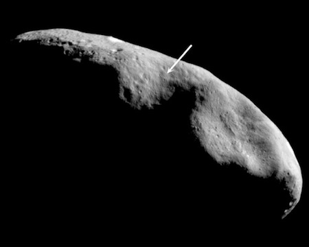
Take a look at these high-quality, close-up images of Asteroid 433 Eros that NEAR Shoemaker spacecraft transmitted as it floated to a historic landing on the rocky surface nearly 200 million miles (322 million kilometers) from Earth on Monday, February 12, 2001.
Science Fiction Landings
As far as I know, the first story about landing a craft on an asteroid was written by Edward Drax in 1931. In The Travel Tales of Mr. Joseph Jorkens, minor navigation problems result in a landing on an asteroid:
"I had not seen it as soon as I had seen Mars, on account of its being so near to the line of the Sun... I couldn't make out anything, as most of the orb was in darkness... I got into the darkness at last and switched on my engines, and flew till I came to the very first edge of twilight that gave light enough for me to land... And that was how I came to make a bad landing, with my wheels deep down in a marsh..."
A more technical approach to landing on an asteroid was completed by Robert Heinlein. In his 1939 short story Misfit, young men without a trade were given another chance in the Cosmic Construction Corps. One job was to make a livable space habitat on selected asteroids.
He walked over by the lookouts at stereoscopes and radar tanks and peered up at the star-flecked blackness. Three cigarettes later the lookout nearest him called out. "Light ho!" "Where away?" His mate read the exterior dials of the stereoscope. "Plus point two, abaft one point three, slight drift astern." He shifted to radar and added, "Range seven nine oh four three." "Does that check?" "Could be, Captain. What is her disk?" came the Navigator's muffled voice from under the hood. The first lookout hurriedly twisted the knobs of his instrument, but the Captain nudged him aside. "I'll do this, son." He fitted his face to the double eye guards and surveyed a little silvery sphere, a tiny moon. Carefully he brought two illuminated cross-hairs up until they were exactly tangent to the upper and lower limbs of the disk. "Mark!" The reading was noted and passed to the Navigator, who shortly ducked out from under the hood. "That's our baby, Captain" ...McCoy forced them to lie down throughout the ensuing two hours. Short shocks of rocket blasts alternated with nauseating weightlessness. Then the blowers stopped and check valves clicked into their seats. The ship dropped free for a few moments -- a final quick blast -- five seconds of falling, and a short, light, grinding bump. A single bugle note came over the announcer, and the blowers took up their hum.
Public Discoveries
Of course, the entire data pool from the NEAR spacecraft is available for “armchair” and regular scientists to study. Of course, NASA has to “clean up” the data before releasing it. Don’t you know. There were things that might not be easy to explain or might be confusing to “Joe and Suzy Average”.
The photos of the asteroid have been very nice.
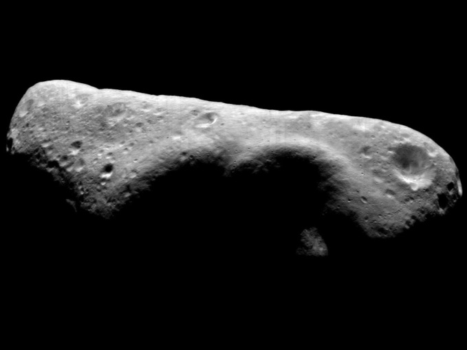
Eros was one of the first asteroids to be visited by a spacecraft, and the first to be orbited and soft-landed on. NASA spacecraft NEAR Shoemaker entered orbit around Eros in 2000, and came to rest on its surface in 2001.
Well, the public will never know what was really discovered or found out.
Instead we get to see nice pictures of dust, rocks and dirt.
![This view of asteroid 433 Eros is part of an image mosaic taken in the early hours of October 26, 2000, during NEAR Shoemaker's low-altitude flyover of Eros. Taken while the spacecraft's digital camera was looking at a spot 8 kilometers (5 miles) away, the image covers a region about 800 meters (2600 feet) across. Rocks of all sizes and shapes are set on a gently rolling, cratered surface. Locally, fine debris or regolith buries the rocks. The large boulder at the center of the scene is about 25 meters (82 feet) across.](../assets/img/the-real-reason-why-nasa-sent-a-probe-to-land-on-the-433-eros-asteroid/Eros_20001026cfull.gif)
What we are told instead is the geology of the asteroid itself. And while this is very interesting, most people wouldn’t really care about it at all. They just don’t.
433 Eros had a past full of impacts and the resulting craters.
Eros is 20 miles (33 kilometers) long and about 8 miles (13 kilometers) wide. It is the most well studied asteroid. NEAR-Shoemaker mapped Eros in detail back in 2000-2001 before officials executed a controlled and dramatic crash landing, the first-ever touchdown on an asteroid.
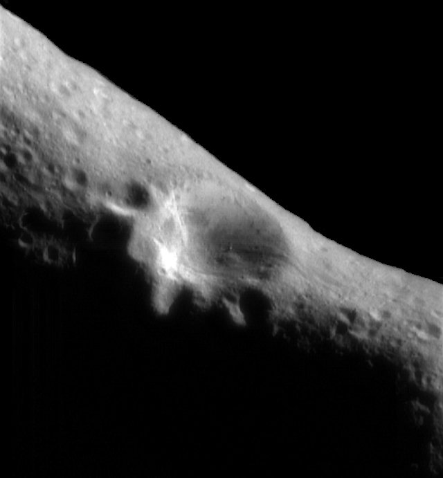
Like any asteroid, Eros been banging around the solar system in some form for about 4.5 billion years.
In the early days of the solar system, when things were more crowded, collisions were frequent. Some large asteroids become smaller. Some small rocks stuck together and grew. Many were scooped up by the fledgling Earth and the other planets.

The asteroids that remain, confined mostly to a belt between Mars and Jupiter, harbor a tale of the solar system’s formation. But first scientists have to figure out how to read their language, with an alphabet of craters and cracks and a grammar based largely on mineral composition and density.
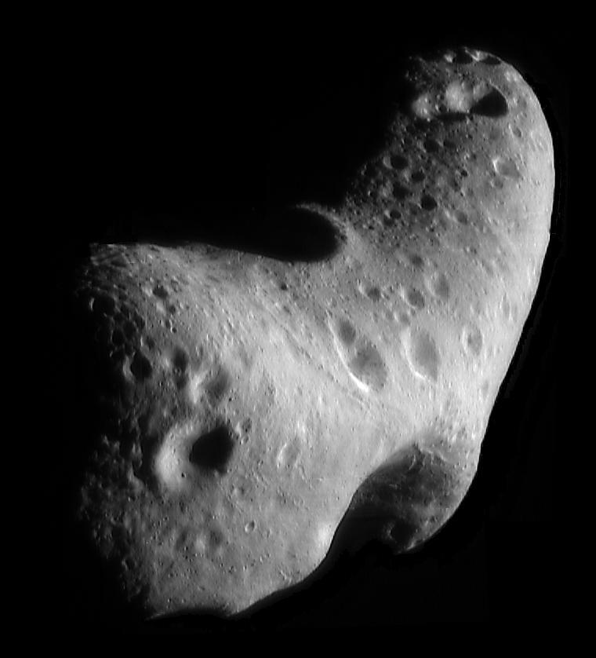
Among Eros’ most striking features is an impact crater 4.7 miles (7.6 kilometers) wide that scientists have determined was carved fairly recently. Another curious aspect to Eros is that across nearly 40 percent of its surface, all craters up to about a third of a mile (0.5 kilometers) wide have been erased.
Smooth surface.
The smooth surface has puzzled scientists since the NEAR landing.
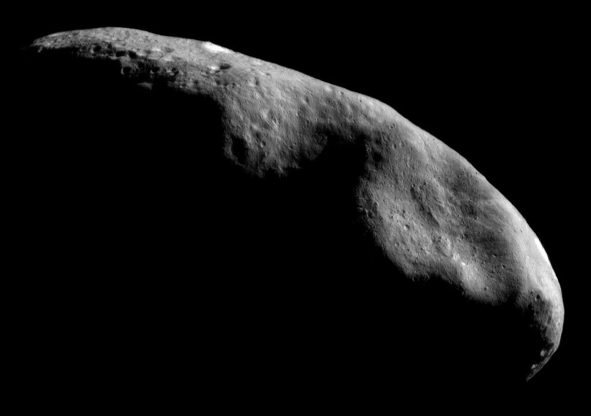
The new study, led by Cornell University researcher Peter Thomas, nixed one theory by determining that the vanished craters could not have been covered by material ejected in the recent large impact. Further, the locations of the erased craters suggests they were jiggled out of existence by the internal vibrations caused in the impact.
![Two examples of ponded deposits on 433 Eros, imaged by the NEAR-Shoemaker spacecraft. Note the marked difference in morphology between these ponds and the degraded craters shown Fig. 1(D) and Fig. 15, indicative of different formation processes. The ponds shown here are located on the low surface-gravity (2.5-3.0 mm sec^-2) 'nose' of the asteroid, which also spends a longer than average amount of time near the terminator (light/dark boundary). (A) A beautiful 100 m diameter ponded deposit containing an embedded 25 m boulder. Note the extremely flat surface containing a tiny (few-meter diameter) impact crater (MET 155888598, 179.04 W, 2.42 S, 0.55 m/pixel). (B) A smaller 75 m diameter ponded deposit. Note the difference between the smooth, fine-grained pond surface and the coarse, boulder strewn terrain surrounding the deposit (MET 155888731, 183.88 W, 3.21 S, 0.63 m/pixel).](../assets/img/the-real-reason-why-nasa-sent-a-probe-to-land-on-the-433-eros-asteroid/SNAG-GIF-00006-9-27-2020-1024x460.jpg)
The hypothesis, if right, can be used to glean an idea of how the asteroid is constructed. Scientists have long wondered if asteroids were solid rocks or, as is likely in at least some cases, loose piles of rubble that have undergone many collisions and managed to hang together.
"Our observations indicate that the interior of Eros is sufficiently cohesive to transmit seismic energy over many kilometers, and the outer several tens of meters [yards] of the asteroid must be composed of relatively non-cohesive material," -Thomas and his colleague, Mark Robinson of Northwestern University, write in the July 21 issue of the journal Nature.
That outer non-cohesive stuff would be regolith, which on Earth is called dirt and on our nearest natural satellite is known as Moon dust.
"For the first time, the authors provide convincing evidence that makes this conclusion more than just reasonable conjecture," - Erik Asphaug, a scientist at the University of California, Santa Cruz who was not involved in the study.
The non-public discoveries
Famous Taiwanese ufologist Scott Waring, studying NASA official images, regularly publishes his findings and shares his opinions. And, this time, he studied the surface of the near-Earth asteroid Eros from a photograph taken by NASA, and found something interesting on it.
According to the ufologist, on the surface of the asteroid Eros clearly visible unnatural structure, which has a rectangular shape.
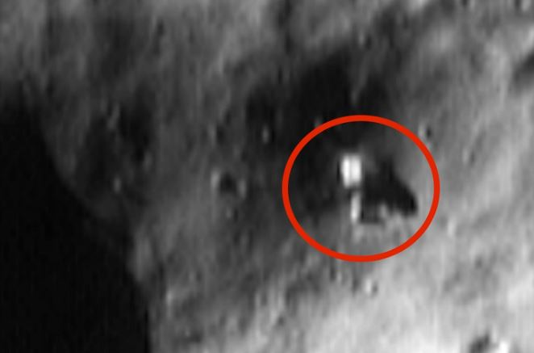
The ufologist found it very funny that NASA noticed this structure, but the space agency’s explanations turned out to be very predictable and primitive.
According to NASA scientists, this is a “large rectangular object that measures 45 meters (148 feet) across“. There are no further explanations for this finding. (Ah. They know what is going on, and they know that they cannot comment on it.)
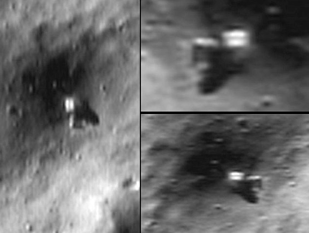
No further information regarding this feature has been made available.
NASA has nothing further to say about this matter.
What is this thing?
So anyone who looks at this photograph can conclude that this object looks to be of some kind of artificial construction. Why?
- The shape is rectangular.
- In the exact center of this object is another rectangular object.
- The light reflecting off this object is different is type and magnitude from the surrounding terrain.
- The shadow of this object shows a rectangular cross section.
- The shadow indicates that the front protrusion hangs out and over the terrain, like a gantry crane or some kind of access tube.
Because of the above, those that study this matter believe that this object is not of natural construction.
One thing is clear. The object in the picture is NOT the NEAR Shoemaker probe from NASA. It is something altogether different.
The probe did not “fire” or launch any objects into the asteroid. This is a photo from the NEAR spacecraft as it orbited the asteroid. In so doing it caught a picture of this rectangular object resting on the surface of the asteroid. Then it was ordered to crash into the asteroid.
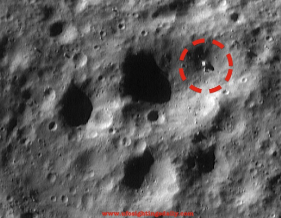
This is a photo of the NASA raw feed for the NEAR Shoemaker Probe as it orbited the 433 EROS asteroid. It shows an object that appears to be a series of interconnected rectangular boxes and containers. There are those that state that these are suggestive of mining operations, but what their true purpose is remains unknown.
Debunkers have their say…
Well, there is no way that this can be “swamp gas”, can it?
Debunkers offer alternative solutions to the observed anomaly. They postulate that [1] it is a Photoshop fraud, or that [2] it is a NASA photo from the Hubble Space Telescope that imaged a photo of the NEAR spacecraft itself on the surface of the asteroid. (If so, then it doesn’t look anything like the spacecraft.) They also postulate that [3] it is merely debris that was ejected from the NEAR spacecraft that happened to land on the asteroid in the fashion shown, and finally [4] it is just a pixilation error caused by a gamma-ray burst that caused an erroneous image pattern.
Interesting stretches of imagination.
But I can personally assure the readership that as of 2004 the MAJestic organization formally considered this object to be an extraterrestrial probe or structure of unknown purpose. That I can tell you all.
Conclusions
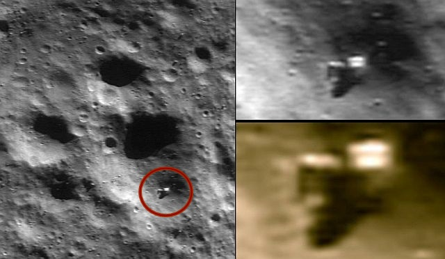
In the image of the asteroid Eros made by the NEAR Shoemaker spacecraft on May 1, 2000, when it was at an orbital altitude of 53 km (33 miles), it is visible, a large rectangular object, 45 meters in diameter.
The size of four (40′ GP) shipping containers laid end to end.
Considering the fact that data from the spacecraft collected on Eros in December 1998 suggest that it can contain 20,000 billion kilograms of aluminum and a similar amount of other metals that are rare on Earth, such as gold and platinum.
The weight of Eros is 6.69 · 1015 kilograms, which is a bit even for an asteroid. However, if we take into account the size of the asteroid – 34.4 km in diameter in the widest place – it turns out that Eros is quite dense, about 2.67 g / cm³. The same density would have an aluminum monolith of similar dimensions. Similar characteristics have the crust. By the way, even with its small size, Eros is the second largest among near-Earth asteroids.
The shape of Eros is irregular, elongated and often compared with peanuts. Because of this, the center of gravity shifts, which creates extremely interesting effects. Moving in its orbit, Eros does not rotate, like spherical bodies – and somersaults, like a boulder rolling from the hill. This also leads to differences in gravitational force. However, it is very easy to overcome it. A man would be able to leave Eros with the help of a foot thrust.
It is possible that this object is a mining station that was used by an advanced alien civilization to extract valuable metals.
The asteroids converging with the Earth are a group of small celestial bodies whose orbit has a chance in future to cross with our planet. The asteroid Eros – is among the most studied asteroids in the solar system.
Eros belongs to the class of asteroids S – the so-called stone asteroids, the material of which consists of silicon and metals.
Orbital characteristics of Eros – its main attraction. Around the Sun, he turns for 1.7 of the Earth year, around his own axis – for 5 and a half hours. But the real feature of Eros is that it belongs to the group of Cupids – asteroids, whose orbit is similar to the terrestrial, but lies further from the Sun. So, none of the Cupids can approach the Sun closer than 1.017 “standard” distance from the Sun to Earth – an astronomical unit. By the way, the Earth itself can move away from the Sun at such a distance – when reaches aphelion, the maximum distance from the luminary. This happens in the middle of summer, between 3 and 7 July.
Due to this they are quite bright – the largest objects of the S-class can be seen in a regular binocular.
Such asteroids also contain a large amount of minerals. After analyzing the composition of Eros, the scientists once again started talking seriously about the industrial development of outer space.
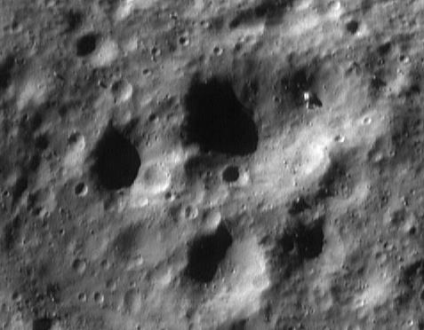
This is an interesting object.
If I were a betting man, I would guess that this object is either a robotic mining droid or a monitoring station of some sort.
But I do not know.
As of 2004, neither did MAJestic.
Anyways…
When someone tries to tell you that sooner or later the US Government is going to release “findings” and conduct “studies” on the “UFO issue”, you can laugh in their face. MAJestic has known for years about the population of our solar system by extraterrestrials. It’s just that there are limits to how we can go about in the discovery of these entities and their technologies.
Anyways, enjoy the few precious snippets that you can find on the internet now. The suppression of NASA related images is now “tighter than a drum”. You won’t find much more in the future moving forward.
And this object…
It’s either a robot, a probe, a station, a mining vehicle, or some other mechanism that was not made by humans. It rests upon the asteroid 433 Eros, and does it’s thing. Whatever it’s “thing” is.
MAJestic knows about it. And perhaps it radiated some signals or gave away it’s presence way back in the late 1990’s. Meaning that it was active at that time.